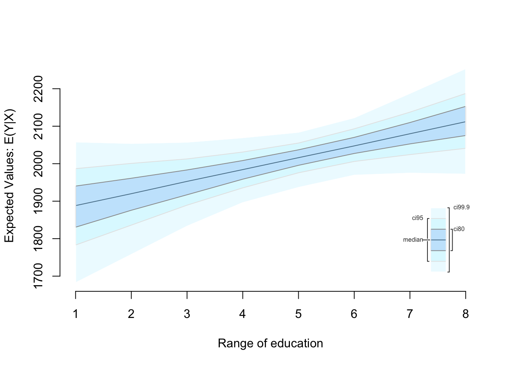
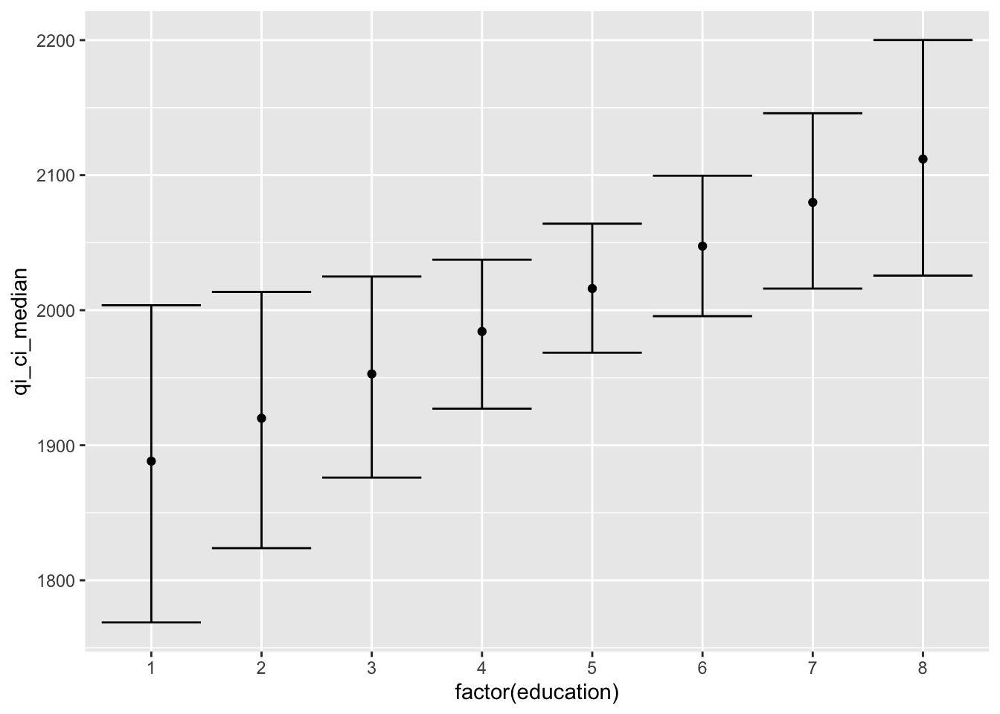
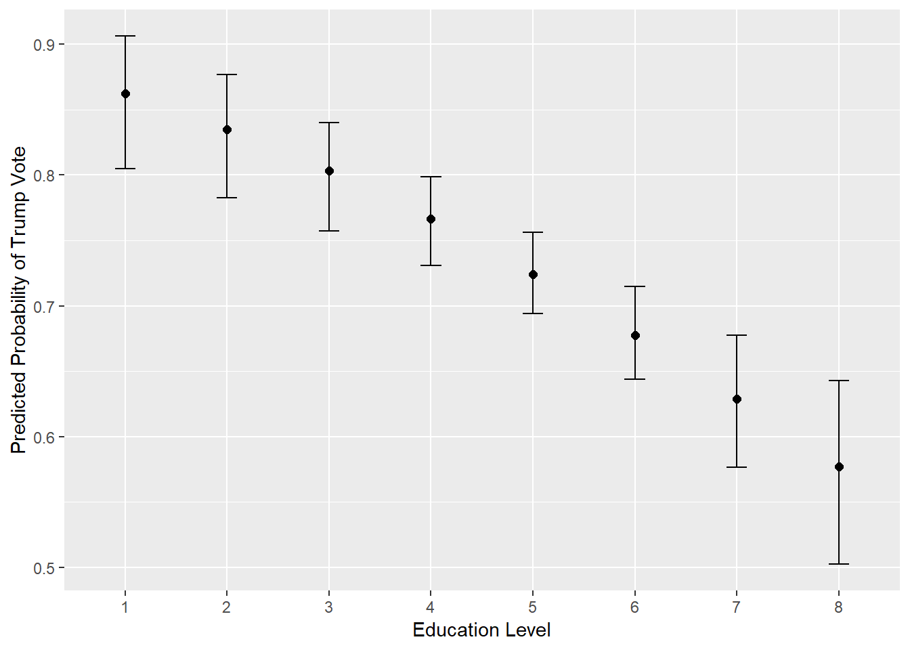
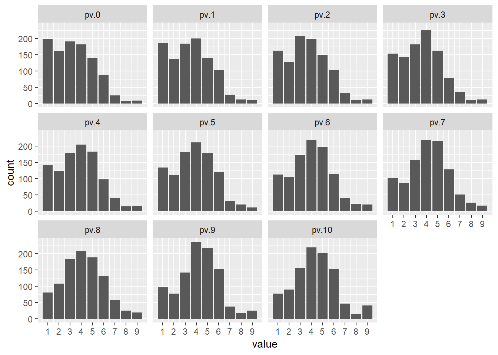
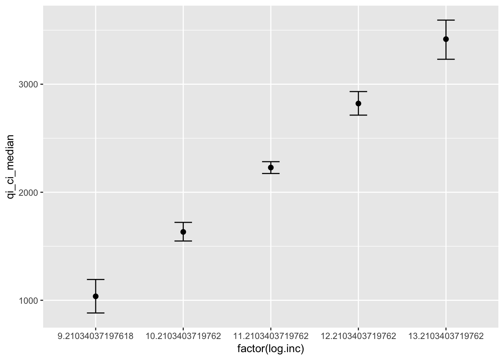
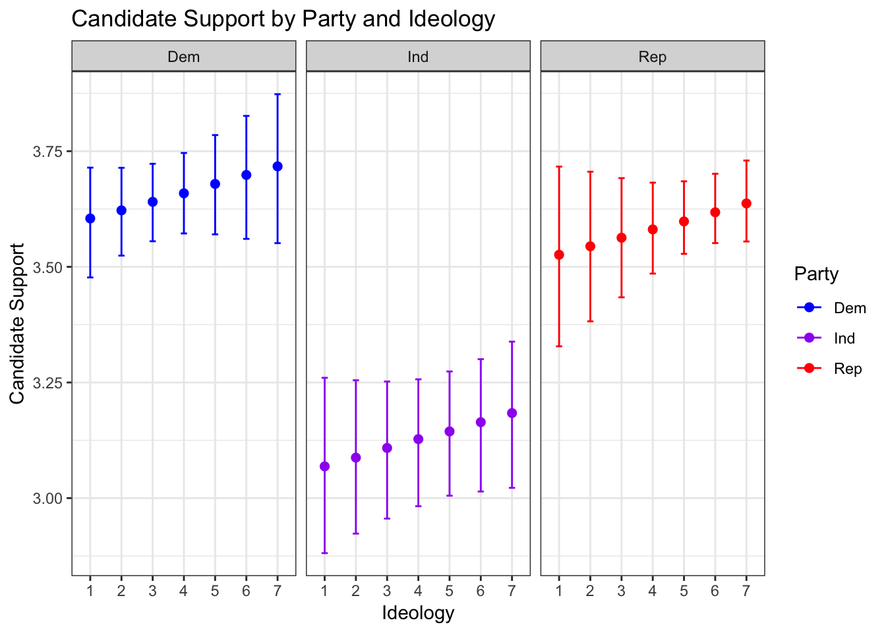

14 Statistical Simulations
So far we have covered many different techniques of statistical analysis. This lab will cover the basics of statistical simulations. As a foundation for this, we will be using the various functions associated with the Zelig Project. Zelig provides a method of simulating outcomes based on certain parameters, but it also provides a different way of constructing almost any model in R. The following packages are required for this lab:
- tidyverse
- psych
- car
- stargazer
- reshape2
- MASS
- zeligverse
14.1 The Basics
The basics of Zelig can be broken down into four steps:
zelig()function to estimate parameters.setx()to set values.sim()to simulate the quantities of interest.plot()to visualize the simulation results.
As the lab progresses, we will amend the steps, but these are almost always a good place to start.
First create a subset of data and remove missing observations.
ds.sub <- ds %>%
dplyr::select("footage", "income", "education", "age") %>%
na.omit()Use OLS regression to look at the relationship between square footage of a home (DV) and the IVs income, age, and education. First we use zelig() to specify the model, indicate model="ls". For the income variable use logged income. As we’ve shown many times throughout the lab, the income variable has a skew.
ds.sub$log.inc <- log(ds.sub$income)
ols1 <- zelig(footage ~ log.inc + age + education, data = ds.sub, model = "ls", cite = FALSE)Just like any other model, we look at the results using the usual methods. Let’s start with summary():
summary(ols1)## Model:
##
## Call:
## z5$zelig(formula = footage ~ log.inc + age + education, data = ds.sub)
##
## Residuals:
## Min 1Q Median 3Q Max
## -1951.5 -526.0 -176.6 296.6 18199.8
##
## Coefficients:
## Estimate Std. Error t value Pr(>|t|)
## (Intercept) -4598.212 403.704 -11.390 < 0.0000000000000002
## log.inc 536.881 36.366 14.763 < 0.0000000000000002
## age 9.633 1.695 5.683 0.000000015
## education 32.968 14.126 2.334 0.0197
##
## Residual standard error: 1111 on 2232 degrees of freedom
## Multiple R-squared: 0.1186, Adjusted R-squared: 0.1174
## F-statistic: 100.1 on 3 and 2232 DF, p-value: < 0.00000000000000022
##
## Next step: Use 'setx' methodAs we could have guessed, increased income corresponds with increased square footage, as does age and education. Further explore education and square footage while holding logged income and age at their means. First take a look at the education variable:
table(ds.sub$education)##
## 1 2 3 4 5 6 7 8
## 24 270 110 456 180 653 406 137According to the code book, a 2 indicates a High School education, and 6 indicates a Bachelor’s degree. We can set the x value of education to both 2 and 6, and then have Zelig run Monte Carlo simulations, creating quantities of interest that we can compare. Use setx() and setx1() to set the two x values:
ols1.ed <- setx(ols1, education = 2)
ols1.ed <- setx1(ols1.ed, education = 6)
ols1.ed## setx:
## (Intercept) log.inc age education
## 1 1 10.9 59.9 2
## setx1:
## (Intercept) log.inc age education
## 1 1 10.9 59.9 6
##
## Next step: Use 'sim' methodThe next step is to use the Zelig::sim() function. This will use Monte Carlo simulations to generate quantiles of interest at each of the specified levels. In the past we might have predicted a Y value based on a model, but this will allow us to see mean, standard deviation, and more, based on 1000 simulations at each level of x.
ols.sim <- Zelig::sim(ols1.ed)
summary(ols.sim)##
## sim x :
## -----
## ev
## mean sd 50% 2.5% 97.5%
## 1 1915.526 49.33007 1916.169 1822.868 2011.28
## pv
## mean sd 50% 2.5% 97.5%
## [1,] 1947.017 1083.78 1944.384 -261.5647 4044.672
##
## sim x1 :
## -----
## ev
## mean sd 50% 2.5% 97.5%
## 1 2046.847 26.29678 2047.144 1995.798 2100.174
## pv
## mean sd 50% 2.5% 97.5%
## [1,] 2131.777 1127.846 2097.634 -53.42045 4340.725
## fd
## mean sd 50% 2.5% 97.5%
## 1 131.3212 56.90982 131.8491 26.07368 241.1586Next we use plot() to visualize the various QIs. I recommend clicking the “Show in New Window” button in the top right corner of the space below. Note: This is not visible via the knit PDF.
plot(ols.sim)
We can use Zelig to simulate based on a range of values, similar to how we would sequence one independent variable when we would predict in past labs. Let’s simulate the data for the whole range of education values, from 1 to 8. We use to pipe operator, %>%, to simplify the syntax.
ols2.ed <- setx(ols1, education=1:8) %>%
Zelig::sim()
plot(ols2.ed)
14.1.1 Plotting Predictions with Zelig
Zelig is useful in another way: plotting predictions. By adding only two more steps to the process, R can return a data frame of information in the tidyverse format that we plot with ggplot2. Let’s plot predicted values of Y, square footage of home, by each education level. We’ve got the simulated values, so use zelig_qi_to_df() to transform the data into a data frame, and use qi_slimmer() to slim the values and generate confidence intervals for each point:
ols.ed.df <- zelig_qi_to_df(ols2.ed) %>%
qi_slimmer()## Slimming Expected Values . . .Take a look at the new data:
ols.ed.df## setx_value log.inc age education qi_ci_min qi_ci_median qi_ci_max
## 1 x 10.93598 59.94007 1 1768.807 1888.237 2003.685
## 2 x 10.93598 59.94007 2 1823.811 1919.995 2013.536
## 3 x 10.93598 59.94007 3 1876.057 1952.843 2024.939
## 4 x 10.93598 59.94007 4 1927.109 1984.267 2037.408
## 5 x 10.93598 59.94007 5 1968.526 2016.057 2064.091
## 6 x 10.93598 59.94007 6 1995.594 2047.471 2099.608
## 7 x 10.93598 59.94007 7 2016.014 2079.884 2145.876
## 8 x 10.93598 59.94007 8 2025.621 2111.976 2200.112Logged income and age are held at their means, education is sequenced from 1 to 8, and there are three other groups of values. Qi_ci_min is the lower limit, qi_ci_median is the estimate, and qi_ci_max is the upper limit. Let’s plot them. Make sure to use factor(education) to treat each level separately.
ggplot(ols.ed.df, aes(factor(education), qi_ci_median)) +
geom_errorbar(aes(ymin = qi_ci_min, ymax = qi_ci_max)) +
geom_point()
14.2 Other Models
Zelig can be utilized for many different types of models. Let’s run through an example of logistic regression. For instance, we can run through the example we used in the last lab, predicting a vote for Trump.
ds$trump <- car::recode(ds$vote_cand, "0 = 1;1 = 0;else = NA;NA = NA")Subset the data and remove missing observations:
ds.sub <- ds %>% dplyr::select("footage", "trump", "gender",
"ideol", "income", "education", "race", "age") %>%
na.omit() %>%
mutate(log.inc = log(income))Build a model that includes gender, ideology, logged income, education, and race. To indicate a logit model, include model="logit":
z.log <- zelig(trump ~ gender + ideol + log.inc + education + race, data = ds.sub, model="logit", cite=FALSE)
summary(z.log)## Model:
##
## Call:
## z5$zelig(formula = trump ~ gender + ideol + log.inc + education +
## race, data = ds.sub)
##
## Deviance Residuals:
## Min 1Q Median 3Q Max
## -2.8637 -0.3625 0.2492 0.4504 2.8749
##
## Coefficients:
## Estimate Std. Error z value Pr(>|z|)
## (Intercept) -4.74842 1.23843 -3.834 0.000126
## gender 0.10011 0.15174 0.660 0.509394
## ideol 1.27104 0.05868 21.661 < 0.0000000000000002
## log.inc 0.10294 0.11766 0.875 0.381643
## education -0.21835 0.04648 -4.698 0.00000263
## race -0.25301 0.06389 -3.960 0.00007500
##
## (Dispersion parameter for binomial family taken to be 1)
##
## Null deviance: 2322.4 on 1772 degrees of freedom
## Residual deviance: 1225.2 on 1767 degrees of freedom
## AIC: 1237.2
##
## Number of Fisher Scoring iterations: 5
##
## Next step: Use 'setx' methodSince we used ideology in the last lab, let’s find the predicted probabilities of voting for Trump based on education levels:
log.out <- setx(z.log, education = 1:8) %>%
Zelig::sim() %>%
zelig_qi_to_df() %>%
qi_slimmer()## Slimming Expected Values . . .Now take a look at the data frame:
log.out## setx_value gender ideol log.inc education race qi_ci_min
## 1 x 0.4179357 4.695431 10.97955 1 1.320361 0.8043388
## 2 x 0.4179357 4.695431 10.97955 2 1.320361 0.7830302
## 3 x 0.4179357 4.695431 10.97955 3 1.320361 0.7574758
## 4 x 0.4179357 4.695431 10.97955 4 1.320361 0.7294318
## 5 x 0.4179357 4.695431 10.97955 5 1.320361 0.6939839
## 6 x 0.4179357 4.695431 10.97955 6 1.320361 0.6425855
## 7 x 0.4179357 4.695431 10.97955 7 1.320361 0.5798745
## 8 x 0.4179357 4.695431 10.97955 8 1.320361 0.5057178
## qi_ci_median qi_ci_max
## 1 0.8634084 0.9074866
## 2 0.8350942 0.8773442
## 3 0.8031580 0.8399864
## 4 0.7659425 0.7993544
## 5 0.7240259 0.7553631
## 6 0.6774094 0.7148882
## 7 0.6287197 0.6782930
## 8 0.5758595 0.6452315Next make the visualization.
ggplot(log.out, aes(factor(education), qi_ci_median))+
geom_errorbar(aes(ymin = qi_ci_min, ymax = qi_ci_max), width = .2) +
geom_point(size = 2) +
ylab("Predicted Probability of Trump Vote") +
xlab("Education Level")
14.2.1 Ordered Logit
Recall that in the last lab, we created an index of energy-saving activities and used ordered logit to assess the probability of individuals doing the activities based on their perceived climate change risk. Let’s revisit that model and go one step farther than we did last time. Instead of looking at predicted probabilities, we will use Zelig to simulate predicted values, actually predicting the number of energy-saving activities individuals do based on their perceived climate change risk.
First create the index again:
energy <- with(ds, cbind(enrgy_steps_lghts, enrgy_steps_heat, enrgy_steps_ac,
enrgy_steps_savappl, enrgy_steps_unplug, enrgy_steps_insul,
enrgy_steps_savdoor, enrgy_steps_bulbs))
ds$s.energy <- with(ds, enrgy_steps_lghts + enrgy_steps_heat + enrgy_steps_ac +
enrgy_steps_savappl + enrgy_steps_unplug + enrgy_steps_insul +
enrgy_steps_savdoor + enrgy_steps_bulbs)Subset the data and remove missing observations:
ds.sub3 <- ds %>%
dplyr::select("s.energy", "ideol", "age", "glbcc_risk") %>%
na.omit()Create a factored version of the index:
ds.sub3$f.energy <- factor(ds.sub3$s.energy)Build the model using model="ologit":
logit1 <- zelig(f.energy ~ ideol + age + glbcc_risk, data=ds.sub3,
model = "ologit", cite=FALSE)Let’s review the results:
summary(logit1)## Model:
## Call:
## z5$zelig(formula = f.energy ~ ideol + age + glbcc_risk, data = ds.sub3)
##
## Coefficients:
## Value Std. Error t value
## ideol 0.048599 0.025282 1.9223
## age -0.002486 0.002491 -0.9978
## glbcc_risk 0.098279 0.014475 6.7895
##
## Intercepts:
## Value Std. Error t value
## 0|1 -1.3457 0.2420 -5.5618
## 1|2 -0.6035 0.2393 -2.5219
## 2|3 0.1868 0.2382 0.7841
## 3|4 1.1010 0.2389 4.6087
## 4|5 2.1605 0.2421 8.9254
## 5|6 3.4735 0.2524 13.7609
## 6|7 4.4917 0.2743 16.3742
## 7|8 5.4706 0.3237 16.8994
##
## Residual Deviance: 9616.121
## AIC: 9638.121
## Next step: Use 'setx' methodWe’re primarily interested in the relationship between climate change risk and energy-saving activities. Normally the next step would be to sequence climate change risk from one to ten and generate predicted probabilities, but we already did that in the last lab. This time, let’s use Zelig to generate predicted values. These next steps might get a little messy, so here they are:
- Use
setx()andZelig::sim()to simulate values for each level of climate change risk. Then useget_qi()to extract the predicted values. We have to do this for each level separately. - Put all the predicted values into a data frame:
- Use
melt()to melt the data frame into long form: - Use ggplot2 and
facet_wrap()to create bar plots of the predicted values.
We can do steps one and two together in one line of code by piping:
pv.0 <- setx(logit1, glbcc_risk = 0) %>% Zelig::sim() %>% get_qi(qi = "pv", xvalue = "x")
pv.1 <- setx(logit1, glbcc_risk = 1) %>% Zelig::sim() %>% get_qi(qi = "pv", xvalue = "x")
pv.2 <- setx(logit1, glbcc_risk = 2) %>% Zelig::sim() %>% get_qi(qi = "pv", xvalue = "x")
pv.3 <- setx(logit1, glbcc_risk = 3) %>% Zelig::sim() %>% get_qi(qi = "pv", xvalue = "x")
pv.4 <- setx(logit1, glbcc_risk = 4) %>% Zelig::sim() %>% get_qi(qi = "pv", xvalue = "x")
pv.5 <- setx(logit1, glbcc_risk = 5) %>% Zelig::sim() %>% get_qi(qi = "pv", xvalue = "x")
pv.6 <- setx(logit1, glbcc_risk = 6) %>% Zelig::sim() %>% get_qi(qi = "pv", xvalue = "x")
pv.7 <- setx(logit1, glbcc_risk = 7) %>% Zelig::sim() %>% get_qi(qi = "pv", xvalue = "x")
pv.8 <- setx(logit1, glbcc_risk = 8) %>% Zelig::sim() %>% get_qi(qi = "pv", xvalue = "x")
pv.9 <- setx(logit1, glbcc_risk = 9) %>% Zelig::sim() %>% get_qi(qi = "pv", xvalue = "x")
pv.10 <- setx(logit1, glbcc_risk = 10) %>% Zelig::sim() %>% get_qi(qi = "pv", xvalue = "x")Put the predicted values into a data frame:
pv.df <- data.frame(pv.0, pv.1, pv.2, pv.3, pv.4, pv.5,
pv.6, pv.7, pv.8, pv.9, pv.10)Melt the data:
pv.m <- melt(pv.df, measure.vars = c("pv.0", "pv.1", "pv.2","pv.3","pv.4","pv.5",
"pv.6","pv.7","pv.8","pv.9","pv.10"))Plot the predicted values. Remember, these are the predicted values that Zelig found by doing 1000 simulations at each level, not just one predicted value. Use geom_bar() to bar plots:
ggplot(pv.m, aes(value)) +
geom_bar() +
facet_wrap( ~ variable, scales = "fixed") +
scale_x_continuous(breaks = c(0:10))
We can deduce from this visualization that the skew shifts more negative as climate change risk increases, indicating that individuals more concerned about climate change are doing more energy-saving activities.
14.2.2 Another Example
Let’s go back to the example model that regressed home square footage on logged income, age, and education. Recall the model:
ols1 <- zelig(footage ~ log.inc + age + education, data = ds.sub,
model = "ls", cite = FALSE)
summary(ols1)## Model:
##
## Call:
## z5$zelig(formula = footage ~ log.inc + age + education, data = ds.sub)
##
## Residuals:
## Min 1Q Median 3Q Max
## -1900.9 -527.6 -178.5 312.6 17418.2
##
## Coefficients:
## Estimate Std. Error t value Pr(>|t|)
## (Intercept) -5121.208 456.914 -11.208 < 0.0000000000000002
## log.inc 592.457 40.386 14.670 < 0.0000000000000002
## age 9.209 1.934 4.762 0.00000207
## education 24.542 15.564 1.577 0.115
##
## Residual standard error: 1077 on 1769 degrees of freedom
## Multiple R-squared: 0.1321, Adjusted R-squared: 0.1306
## F-statistic: 89.77 on 3 and 1769 DF, p-value: < 0.00000000000000022
##
## Next step: Use 'setx' methodSo far in the labs, we would often sequence one IV while holding the rest constant at their means. But that is not the only way to go about this. Perhaps you were interested in the relationship between income and square footage for people who have a Bachelor’s degree, or maybe the relationship between education and square footage for individuals with a specific income. You can hold IVs constant at values other than their means. If you do so, in it important that you make note of it and are transparent about the data you are presenting. Let’s use Zelig to generate simulations and predictions for respondents who went to college by their logged income. A Bachelor’s degree is indicated by a 6 on the education scale. We need to know the range of logged income as well:
describe(ds.sub$log.inc)## vars n mean sd median trimmed mad min max range skew kurtosis
## X1 1 1773 10.98 0.69 11 10.99 0.7 9.21 13.71 4.5 -0.12 0.05
## se
## X1 0.02inc.out <- setx(ols1, education=6,
log.inc = seq(min(ds.sub$log.inc), max(ds.sub$log.inc))) %>%
Zelig::sim() %>%
zelig_qi_to_df() %>%
qi_slimmer()## Slimming Expected Values . . .inc.out## setx_value log.inc age education qi_ci_min qi_ci_median qi_ci_max
## 1 x 9.21034 60.93739 6 882.4395 1036.623 1192.488
## 2 x 10.21034 60.93739 6 1548.5850 1632.855 1721.080
## 3 x 11.21034 60.93739 6 2173.4661 2228.582 2282.978
## 4 x 12.21034 60.93739 6 2713.8159 2821.148 2932.045
## 5 x 13.21034 60.93739 6 3230.8880 3417.201 3593.192Plot the predictions:
ggplot(inc.out, aes(factor(log.inc), qi_ci_median)) +
geom_errorbar(aes(ymin=qi_ci_min, ymax=qi_ci_max),width=.2) +
geom_point(size=2)
14.3 Zelig with non-Zelig Models:
There are some models that can be specified outside of Zelig but that you can use the Zelig functions on. The complete list can be found on the Zelig website, but we can demonstrate with the lm() function. Here’s a classic model from our labs:
ds$log.inc <- log(ds$income)
lm1 <- lm(glbcc_risk ~ glbcc_cert + log.inc + education + gender + ideol, data=ds)
summary(lm1)##
## Call:
## lm(formula = glbcc_risk ~ glbcc_cert + log.inc + education +
## gender + ideol, data = ds)
##
## Residuals:
## Min 1Q Median 3Q Max
## -7.826 -1.356 0.145 1.584 8.013
##
## Coefficients:
## Estimate Std. Error t value Pr(>|t|)
## (Intercept) 10.31811 0.78977 13.065 < 0.0000000000000002 ***
## glbcc_cert 0.27605 0.01886 14.636 < 0.0000000000000002 ***
## log.inc -0.17187 0.07537 -2.280 0.02268 *
## education 0.03038 0.02981 1.019 0.30831
## gender -0.34293 0.10091 -3.398 0.00069 ***
## ideol -0.92756 0.02956 -31.378 < 0.0000000000000002 ***
## ---
## Signif. codes: 0 '***' 0.001 '**' 0.01 '*' 0.05 '.' 0.1 ' ' 1
##
## Residual standard error: 2.325 on 2260 degrees of freedom
## (281 observations deleted due to missingness)
## Multiple R-squared: 0.4192, Adjusted R-squared: 0.4179
## F-statistic: 326.2 on 5 and 2260 DF, p-value: < 0.00000000000000022We pass this model along to setx() and go from there. Let’s sequence ideology from 1 to 7:
lm1.out <- setx(lm1, ideol=1:7) %>%
Zelig::sim() %>%
zelig_qi_to_df() %>%
qi_slimmer()## to_zelig is an experimental function.
## Please report issues to: https://github.com/IQSS/Zelig/issues## Assuming zls to convert to Zelig.## Slimming Expected Values . . .ggplot(lm1.out, aes(x=factor(ideol), y = qi_ci_median)) +
geom_errorbar(aes(ymin = qi_ci_min, ymax = qi_ci_max), width = .2) +
geom_point(size = 2)
Let’s move onto a different model that might provide some interesting findings. In a previous lab we looked the relationship between ideology and support for the candidate an individual voted for. Recall that we used polynomial terms to find a better model fit and concluded that the relationship was not strictly linear. Let’s take that question one step further and break it down by political party. Perhaps there are linear relationships when we look at candidate support by ideology and party. We use Zelig to run simulations and predict values of candidate support for each of the ideology levels based on political party.
First subset the data:
d <- filter(ds) %>%
dplyr::select("ideol", "education", "vote_cand_spt", "income", "age", "gender", "f.party.2") %>%
na.omit() %>%
mutate(log.inc = log(income),
f.part = as.factor(f.party.2))Build the model:
lm2 <- lm(vote_cand_spt ~ ideol + education + log.inc + age + gender + f.part, data=d)
summary(lm2)##
## Call:
## lm(formula = vote_cand_spt ~ ideol + education + log.inc + age +
## gender + f.part, data = d)
##
## Residuals:
## Min 1Q Median 3Q Max
## -2.9741 -0.6758 0.1736 1.0439 2.2191
##
## Coefficients:
## Estimate Std. Error t value Pr(>|t|)
## (Intercept) 4.073215 0.455838 8.936 < 0.0000000000000002 ***
## ideol 0.018765 0.019300 0.972 0.331009
## education -0.040783 0.015770 -2.586 0.009776 **
## log.inc -0.063440 0.040437 -1.569 0.116841
## age 0.007197 0.001913 3.763 0.000173 ***
## gender -0.048230 0.052717 -0.915 0.360362
## f.partInd -0.532600 0.085114 -6.257 0.00000000048 ***
## f.partRep -0.076862 0.073093 -1.052 0.293129
## ---
## Signif. codes: 0 '***' 0.001 '**' 0.01 '*' 0.05 '.' 0.1 ' ' 1
##
## Residual standard error: 1.123 on 1941 degrees of freedom
## Multiple R-squared: 0.0445, Adjusted R-squared: 0.04106
## F-statistic: 12.91 on 7 and 1941 DF, p-value: 0.0000000000000002543Within the setx() function we can sequence ideology from 1 to 7 and sequence the three party options, Democrats, Independents, and Republicans. Then use Zelig::sim(). Doing so will perform 1000 simulations for each level of ideology and each party, so 1000 for Democrats with an ideology score of 1, 1000 for Democrats with an ideology score of 2, and so on.
lm2.out <- setx(lm2, ideol=1:7, f.part=c("Dem", "Ind", "Rep")) %>%
Zelig::sim()## to_zelig is an experimental function.
## Please report issues to: https://github.com/IQSS/Zelig/issues## Assuming zls to convert to Zelig.Now get the data into tidyverse data frame form, slim the QIs:
lm2.out <- zelig_qi_to_df(lm2.out) %>%
qi_slimmer()## Slimming Expected Values . . .Next plot the results of the simulations:
ggplot(lm2.out, aes(factor(ideol), qi_ci_median, color = f.part)) +
geom_errorbar(aes(ymin = qi_ci_min, ymax = qi_ci_max), width = .2) +
geom_point(size = 2) +
scale_color_manual(values = c("blue", "purple", "red"),
name = c("Party")) +
facet_wrap( ~ f.part, scales = "fixed") +
ggtitle("Candidate Support by Party and Ideology") +
xlab("Ideology") +
ylab("Candidate Support") +
theme_bw()
This visualization tells us some interesting information: Independents do not appear to be have as much support for the candidate they voted for, regardless of their ideology. It also appears that Democrats and Republicans follow the same trend, with more conservative Democrats tending to support the candidate they voted for a little more, and the same for Republicans.
For more on Zelig, make sure to check out the website: zeligproject.org